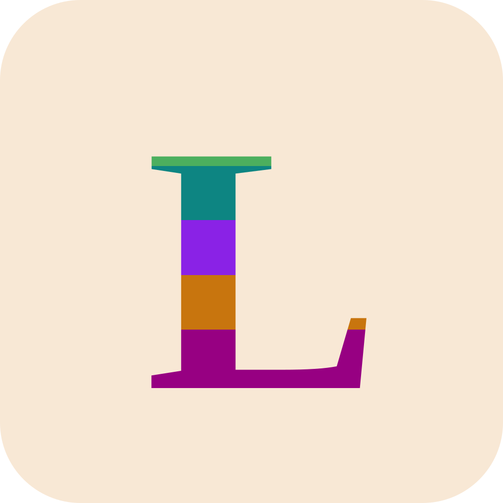

Built-in local ad blocker
Hostname-based filtering blocks common advertising and tracking network domains on-device, reducing visual clutter without a third-party extension dependency.

Lesspecad View GitHubPrivacy-first Android browser · UNDER 20 MB APK TARGET
Lesspecad combines a local hostname ad filter, incognito-first controls, reader mode, script extensions, tab groups, and cloudless backups in a modern Android browser built with Jetpack Compose and Material 3.
This hero space is reserved for verified Lesspecad Android captures, so the page does not show fictional numbers or pretend product screens before the app UI is ready.
Recommended: keep this honest placeholder until final Android screenshots are available.
Feature set
Designed for Android users who want fewer trackers, less clutter, and more local control without depending on external add-ons or account-based syncing.
Hostname-based filtering blocks common advertising and tracking network domains on-device, reducing visual clutter without a third-party extension dependency.
Temporary cookies, storage, and cache can be cleared from memory when a private tab closes, with a preference to launch in clean-slate mode every time.
Manage open sessions with a card-based tab hub and organize work, research, and personal browsing into labeled, color-coded groups.
Extract articles and essays into a high-readability view that removes ads, sidebars, navigation noise, and other distractions.
Customize pages with self-executing JavaScript extensions, including ready-to-use reading aids, font zooming, and advanced dark-mode helpers.
Export and import bookmarks, active tabs, groups, downloads, settings, and extensions as secure JSON files without telemetry or cloud lock-in.
Local-first privacy
Lesspecad focuses on device-side control: ad filtering happens locally, private sessions stay temporary, and backups are explicit JSON files you can move between devices yourself.
Native Android stack
Declarative UI with Material Design 3 and Android dynamic color support.
Reactive state flows and coroutines for predictable asynchronous behavior.
Local persistence for preferences, bookmarks, extensions, downloads, and tabs.
Lifecycle-aware WebView reuse helps reduce memory pressure and crashes.
Get involved
Lesspecad is open source under MPL 2.0. Clone the repository, build with Gradle, and help shape a focused privacy browser for Android.
git clone https://github.com/flisvibing/lesspecad.git
cd lesspecad
gradle assembleDebug